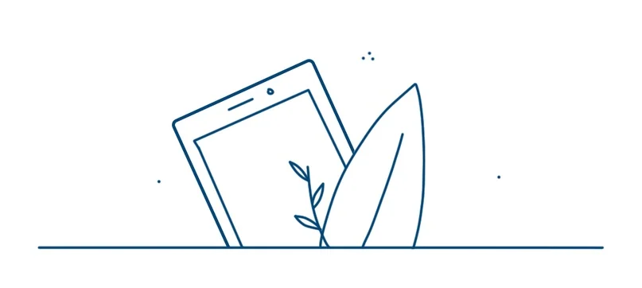
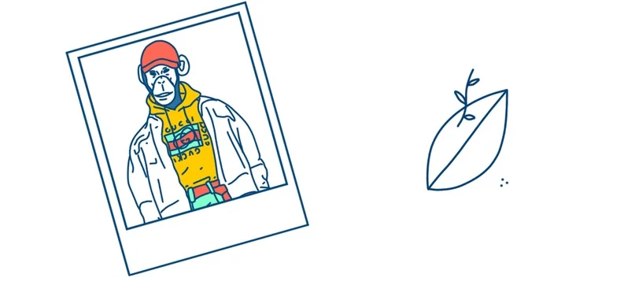

Людям присущ потребительский эксгибиционизм той или иной степени — им страдают даже «нитакиекакфсе». А еще в эпоху экономики изобилия купить новые носки быстрее, дешевле и проще, чем постирать старые. Александр Сорге — о том, как работает эта самая post-scarcity economy и как она связана с яичками приматов.
Перенесемся в удивительный мир дикой природы. Недавнее исследование, опубликованное в Proceedings of the Royal Society B, показало: чем пышнее у примата растительность на лице, чем больше нос и краснее зад, — одним словом, «украшения», сигнализирующие окружающим о превосходстве, — тем меньше его яички. И в этом люди мало чем отличаются от обезьян, разве что «украшения», которыми мы красуемся перед окружающими, приняли немного другой вид. Еще Довлатов писал, что у одних самцов лысых обезьян вместо «чудовищных мозолей на заду» — душа, у других — внешность и «лишь у самых беззаботных — просто фаллос. Член как таковой». Но душой перед окружающими особо не пощеголяешь, бородой сегодня уже никого не удивить, а светить сосиской в общественных местах — административное правонарушение (да и кого ты удивишь своей кожаной свирелью, лол). А показать себя как-то надо. И лучшим способом подать сигнал внеземной цивилизации с Венеры — женщинам, ну или соседям по племени, в нашем обществе стал консюмеризм. Участвует в этих брачных играх каждый, даже тот, кто считает себя «нитакимкакфсе».
Потребительский эксгибиционизм
Потребление давно уже вышло за рамки простого удовлетворения потребностей. И Cassio за сто баксов, и Vacheron Constantin за пару тысяч показывают время одинаково точно, однако многие предпочли бы более дорогие часы. Ведь сегодня мы приобретаем не только товар, но и его «ментальную оболочку»: набор стереотипов и убеждений, которые витают вокруг товара. Покупатели «мерседеса» скажут, что выбрали его, потому что это надежная, комфортная и красивая машина. И, несомненно, будут правы. Но давайте на чистоту, большинство приобретают «мерседес», потому что это — «мерседес», для многих он стал символом успеха.
Именно поэтому люди часто готовы переплачивать за бренд: ведь мы примеряем ментальную оболочку товара на себя. Футболки Gucci сделаны не из лобковых волос единорога, а из точно такого же хлопка, что и футболки в «Ашане». Но мы готовы жертвовать деньгами, ведь заветная тряпка с красно-зелеными полосами магическим образом может превратить обычную доярку из Хацапетовки в модную светскую диву. По крайней мере, по мнению самой доярки.
Более того, качество товара часто вообще не играет никакой роли, на первое место ставится «оболочка»: именно поэтому на дорогах столько доисторических ведер со звездой на капоте. Плевать, что двадцатилетний «мерседес» уже разваливается, плевать, что за эту цену можно взять автомобиль лучше качеством, ведь «мерин же, еба».

И такое поведение вполне социально оправданно. Ведь мы покупаем дорогие тряпки не только и не столько для того, чтобы потешить свое самомнение, но и чтобы задеть самомнение окружающих. Потребление позволяет нам показать статус, позиционировать себя в обществе. Увешивая себя техникой, побрякушками и прочей шелухой, мы создаем внешние социальные гениталии, которыми машем друг перед другом. От их размера часто зависит первое впечатление. В этом мы ничем не отличаемся от приматов: просто они сверяют, у кого жопа краснее, а мы — у кого машина дороже. С такой точки зрения тезис ученых о компенсации маленьких яичек большими «украшениями» находит неожиданное подтверждение и в нашем обществе. Все мы догадываемся: если какой-то нехороший человек подрезает тебя на большом черном джипе — это потому, что у него яйцо всего одно, да и то размером с горошину.
Причем потребление — это не только покупки в магазинах. То, как мы проводим досуг: за просмотром футбольчика под пеффко или Бергмана под красное «Шато-Петрдо» — суть тоже акт потребления, который мы часто стремимся выставить напоказ. Именно поэтому некоторые духовно богатые девы ездят в метро с томиком Гегеля. А вовсе не от того, что душный трясущийся вагон — это лучшее место, чтобы знакомиться с откровениями философа.
Потребление также заменяет нам систему «свой-чужой», сигнализирует о принадлежности к той или иной социальной страте или группе. Когда вы покупаете то же, что и остальные, вы сигнализируете окружающим, что вы свой — «нормальный человек», ведь у вас «все как у людей»: кредитный «солярис», «затосвоя» квартира в человейнике и путевочка в Турцию.
Это называется «присоединение к большинству», однако вовсе не означает, что вы выбираете лучший вариант. Ведь миллионы, как известно, могут ошибаться. Или же вы можете покупать все самое дорогое, чтобы показать окружающим, кто здесь ультрасамец или альфасамка — это называется «демонстративное потребление»: чем дороже товар, тем лучше. С этим, кстати связан один парадокс — эффект Веблена: когда престижные товары растут в цене, спрос на них только увеличивается. Понты действительно дороже денег.
Причем вы участвуете в таком пиписькомерянии, даже если не следуете трендам, сознательно одеваетесь только в секонд-хэнде и выходите в интернет с калькулятора. Полностью отказаться от потребления и питаться энергией Вселенной смог только Будда Гаутама. А поскольку вы (как и я) с огромной долей вероятности не являетесь его инкарнацией, то точно так же включены в консюмеристскую цепь.
Просто вы намеренно выбираете то, что отказываются потреблять другие. «Эффект сноба» — точно такая же попытка позиционирования себя в обществе, как и «демонстративное потребление» или «присоединение к большинству». Просто не за счет самых дорогих или популярных товаров, а за счет нестандартных. Мол, может, мой социальный пенис и не такой большой, как у того парня на «мерседесе», но зато в какую диковинную завитушку он свернут!
Государственная стимуляция эрекции
Нам всем присущ потребительский эксгибиционизм в той или иной степени: одному больше важны характеристики смартфона, другому — бренд. Самое интересное, что любое государство только подталкивает своих граждан к такому поведению. Падение спроса — казнь египетская для любой экономики. Когда люди начинают меньше покупать, промышленники начинают меньше производить: лавэха не мутится, зарплаты урезаются, люди увольняются. Все это приводит к порочному кругу: безработица и низкие зарплаты — причина еще большего сокращения спроса. Поэтому государству гораздо выгоднее, чтобы его граждане могли потреблять, и потреблять много: для промышленников высокий спрос означает высокие прибыли, для государства — высокие налоговые платежи, ну а для простых смертных — высокие зарплаты, рабочие места и широкий ассортимент. В выигрыше все: и волки с Уолл Стрит сыты, и овцы с новеньким айфоном целы. Главное, следить за инфляцией. Именно поэтому китайцы, чтобы разогнать свою красную экономическую машину, создают тепличные условия для бизнеса — то же снижение налогов работает как закись азота для экономического двигателя. И недополученные деньги через пару лет вернутся в бюджет сторицей. Ну а у России, как всегда, свой особый путь.
Более того, если раньше экономисты и чиновники боялись пустых полок и голодных очередей, то сегодня страх внушают пустые супермаркеты с ломящимися от изобилия товарами. Механизация и роботизация производства уже сегодня позволяет не только производить больше товаров, но и сделать их дешевле: примером тому могут служить роботизированные сборочные линии автоконцернов или автоматизированные склады Amazon. Предложение растет, однако спрос становится стимулировать все сложнее. А в будущем умные консервные банки заменят еще большее количество людей, забрав их работу. Это также скажется на спросе.
Человечество медленно вкатывается в эпоху post-scarcity economy — постдефицитной экономики, или экономики изобилия, когда купить новые носки быстрее, дешевле и проще, чем постирать старые.
Конечно, эта фраза у большинства обитателей постсоветского пространства вызовет лишь истерический смех, но отголоски века изобилия слышны уже сегодня. Программы безусловного базового дохода, когда деньги раздаются просто так, даром — не только желание искоренить бедность, но и стремление включить в потребительскую цепочку большее количество людей. А разговоры британских и нидерландских парламентариев о четырехдневной рабочей неделе вызваны не добротой душевной, а надвигающейся волной технологической безработицы.

Эпидемия импотенции
За все приходится платить. За пышную растительность на лице или длинные носы приматы расплачиваются маленькими яичками. Выработка спермы — энергозатратный процесс, и природе приходится выбирать: либо большие яйца, либо красивые внешние атрибуты. В XXI веке красивые и большие социальные гениталии стали особенно важными, ведь тыкать ими окружающим в лицо, благодаря Instagram и прочим Facebook, стало еще проще. Всем давно уже плевать, кем ты на самом деле являешься, главное то, кем ты кажешься: насколько цветаст и красив твой петушиный хвост. И никому нет дела до того, что под этими перьями ты — обычная курица.
И проблема даже не в том, что для некоторых акт потребления стал самоцелью жизни, а многие предпочитают увеличивать свои публичные гениталии, а не растить реальные яйца, производить метафорическую сперму и пуляться ею в окружающих. Проблема в том, что эти внешние гениталии сегодня принимаются за реальные достижения, и обычных петухов начинают считать значимыми фигурами просто за их накладные хвосты: им верят, их слушают.
Но, возможно, весь этот потребительский фетишизм канет в Лету именно благодаря развитию общества потребления. Массовое и дешевое производство, рост благосостояния приводят к падению значимости публичных гениталий: лет десять назад айфон считался показателем статусности, сегодня же он стал лишь дорогой игрушкой, ведь купить в кредит смартфон может почти любой. Постдефицитная экономика позволит разорвать и развеять ту ментальную оболочку, которой сегодня обернуты многие товары, и приведет к атрофии социального пениса. Ведь когда вещей много и они дешевы, с их помощью практически невозможно выделиться. И, возможно, с наступлением эпохи изобилия придет и массовое осознание почти буддистской истины: того, что вещь — это просто вещь. Пафосная музыка, гаснущий свет, занавес.